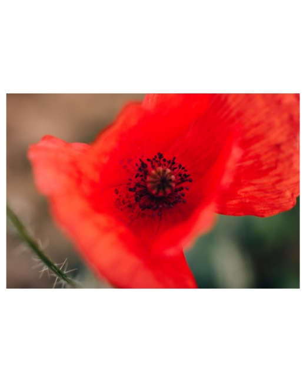
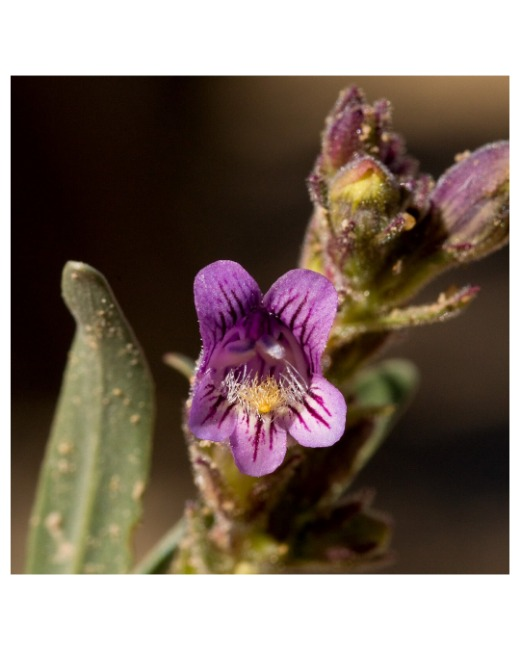
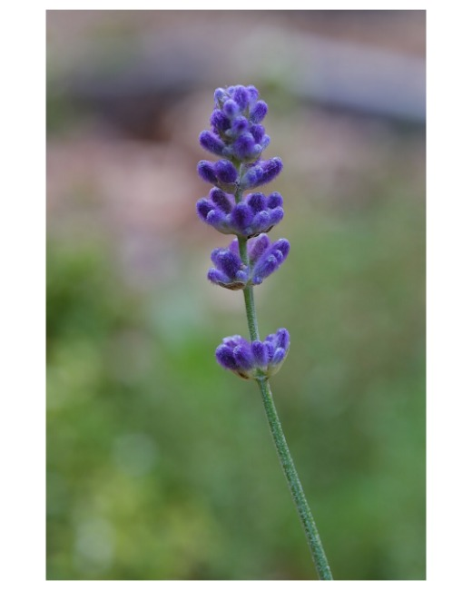

Keep every
photo whole.
Mixed shapes. One frame.
Reorder. Download the ZIP.
Free · Local · No account
English / 中文
Three real photos → the same 4:5 frame



Actual tool exports · full image fitted inside each frame